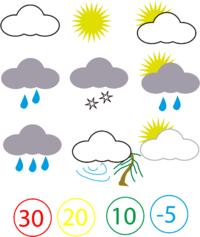

Compromiso del proyecto
1- ¿Como podemos medir la dimension del tiempo?
2- ¿Que es la meteorologia? y ¿cuales son sus caracteristicas?
Desarrollo
1- El instrumento que utilizamos para medir el tiempo es el reloj. La unidad que utilizaremos como referencia será el día. Con respecto al día, hay unidades de tiempo menores y mayores que el día.
Unidades más pequeñas que el día:
* Un día tiene 24 horas.
* Una hora tiene 60 minutos.
* Un minuto tiene 60 segundos.
Unidades más grandes que el día:
* 7 días forman una semana.
* 15 días forman una quincena.
* Entre 28 y 31 días forman un mes.
* 3 meses forman un trimestre.
* 4 meses forman un cuatrimestre.
* 6 meses forman un semestre.
* 12 meses forman un año.
* 2 años forman un bilenio.
* 5 años forman un lustro.
* 10 años forman una década.
* 100 años forman un siglo.
* 1000 años forman un milenio.

2- La meteorología es la ciencia atmosférica interdisciplinaria que
estudia el estado del tiempo, el medio atmosférico, los fenómenos meteorológicos y las leyes que los rigen con apoyo de disciplinas
auxiliares como la física de la atmósfera y la química de la atmósfera.
Caracteristicas de la meteorología:
La meteorología se centra en predecir el clima en los tiempos inmediatamente venideros, estudiando para ello las fuerzas y fenómenos de la atmósfera. En cambio, la climatología asume un rol a mucho más largo plazo.
La labor de esta última es estudiar los modelos climáticos del pasado, presente y futuro. De esta manera, permite comprender el devenir del clima en el mundo y poder anticipar efectos a largo plazo, empleando para ello valores estadísticos, más que predictivos.

Integrantes del grupo:
1- Edwin Steve Suarez
2- Juan Pablo Valverde
3- Julian Enrique Buitrago Charry